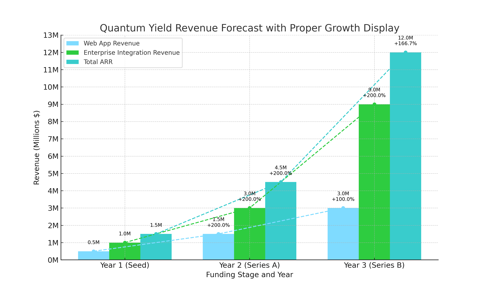

Quantum Yield envisions a paradigm shift in yield analysis, moving away from conventional parametric approaches towards a dynamic, human-centric interaction with AI models. Our mission is to first apply this new paradigm shift in the financial market, where accurate and adaptive forecasting is critical for managing risk and optimizing investment strategies. We aim to elevate human intelligence through AI collaboration, creating an intuitive and adaptive forecasting experience that empowers users to make insightful decisions without being constrained by traditional model structures.
Our patent-pending technology redefines yield curve forecasting by seamlessly integrating AI-anchored models with rapid, on-the-fly forecasting capabilities, enhanced by intelligent synthetic training processes that are significantly faster than traditional training methods—without sacrificing accuracy. This unique approach allows users to explore yield dynamics efficiently, much like how distillation accelerates model training. By fostering a symbiotic relationship between human intelligence and AI, Quantum Yield positions itself at the forefront of the next generation of yield analysis.
Yield curve forecasting applied to the US Treasury yields is just the beginning. Our technology is inherently versatile, capable of application beyond finance into any field where yield-based decision-making is critical. By fundamentally changing how users interact with forecasting models, Quantum Yield aims to become a transformative force in the financial technology landscape and beyond.
Our edge lies in the AI model’s tremendous capability for pattern recognition, regardless of the underlying assets, enabling futuristic time-series forecasting of yields. The quality of training models is essential to our technology because they serve as anchors for reliable forecasting. As AI models are not without limits, we incorporate dynamic features into the workflow to ensure outcomes are optimal. This adaptive approach allows the system to maintain accuracy and relevance even as economic conditions evolve.
Conventional parametric approaches to yield forecasting fall short in modeling the inherent non-linearity of today’s complex and convoluted financial ecosystems. These legacy models are limited in their ability to adapt, often assuming overly simplified relationships that fail to capture the true dynamics of economic environments.
Quantum Yield addresses this challenge by designing models that not only seek optimality but also enable intuitive interaction and transparency for users, thereby bridging the gap between powerful AI performance and human understanding.
Quantum Yield’s technology reimagines how humans and AI interact in the context of yield analysis. By incorporating anchored models that provide quick, on-the-fly forecasting, we allow users to dynamically explore yield scenarios. Our approach fosters collaboration between human intelligence and AI, where users actively engage with model outputs during training to ensure they're optimized and well-tuned. During the forecasting process, we refine outputs through intuitive interaction. A key enabler of this responsiveness is our patent-pending surrogate modeling layer that accelerates the training workflow by an order of magnitude of 10x. Internal testing demonstrated performance improvements from over 60 seconds down to just 6 seconds in training time. This leap in efficiency makes real-time forecasting and scenario analysis truly tenable, allowing users to iterate rapidly and adapt to changing market conditions with minimal latency.
The first focus area for Quantum Yield is the financial market's risk management sector, particularly in interest rate modeling and strategy, treasury management, providing future cashflow-based yield forecast analysis. This includes financial instruments, asset and liability (A&L) management, and risk assessment for banks, insurance companies, and asset managers.
Our initial stage of deployment will focus on the U.S. financial market, where regulatory structure, data accessibility, and institutional demand provide an ideal launch environment. We will simultaneously begin planning for global expansion, targeting developed markets in Europe and Asia where yield curve modeling is critical for managing macroeconomic uncertainty.
The Company affirms that all relevant intellectual property has been or will be assigned to Quantum Yield, Inc. This includes the following key assets:
Year 1: $500,000 ARR from 20 clients (banks, asset managers, insurers) plus $1.0 million from advanced integration features.
Year 2: $1.5 million ARR by expanding to 50 clients and integrating advanced A&L management features, plus $3.0 million from advanced integration features.
Year 3: $3.0 million ARR plus $9.0 million from enterprise integration—totaling $12 million through deeper market penetration and tailored solutions for complex financial instruments.
Quantum Yield, Inc. (the “Company”)
A Delaware Corporation.
[Investor Name] (the "Investor")
$[Investment Amount] (the “Investment”), with a minimum investment of $50,000.
Convertible Note – The Investment is a convertible debt instrument that will convert into equity in the next financing round (typically Series A).
The Convertible Note will mature on [Maturity Date], typically 18–24 months from the date of issuance, unless converted earlier.
Signature: _______________________________
Date: _______________________________
Investor:
Signature: _______________________________
Name: _______________________________
Date: _______________________________